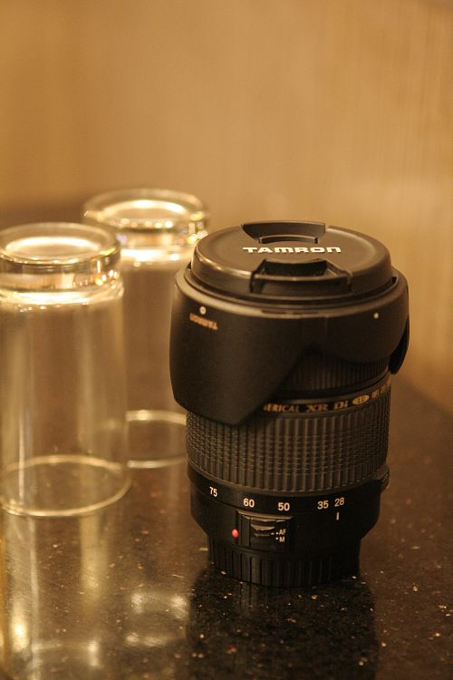

下雨的下午还是去了艺风，买了canon EF 24-70mm f/2.8L USM的镜头，装在350D上之后感觉有点畸形，好象个头小的波霸MM，走路往前栽似的。不过现在买也是为了以后换机身做准备。晚饭时迫不及待地做起了比对，以下照片没有经过PS，完全是原片效果。
以下是用腾龙28-75mm F2.8恒定光圈的镜头拍摄：

Canon EF 24-70mm f/2.8L USM镜头拍摄：

用canon EF 24-70mm f/2.8L USM镜头试了几张夜晚拍摄的效果。
1、在车内拍摄的中控台上的小摆设；

2、隧道里的汽车；

3、TENBA摄影包，回家查了下官方指导价是680，商家报1380，我还了80元，1300买入。明天就去找他买闪光灯，然后和他谈谈摄影包的价格。这个教训说明买东西只做大件功课，查资料查价格查评测，而忽略了小件。只有错买没有错卖的。那小子说TNBA是摄影包中的LV，如果LV卖1万，大家都花1万买我也没意见，如果大家花1万买我花2万，那肯定有意见。话说回来，我宁愿花1万去买电子产品和摄影器材也不会花1万去买个LV回来。恩~但愿明天那小子装个傻说记错价格了。。。；

4、摄影包的侧袋

是不是有区别呢？应该还是有的吧？？？尤其是中控台上小摆设那张，以前我用SONY F717、Canon 350D+50mm f1.8以及Canon 350D+腾龙28-75mm F2.8都拍摄过，这只24-70的镜头夜间表现好一些，更多优势有待考察。第一次用24-70，很重，手腕不吃力。这只镜头08年卖8750元，今年8月行货价格是1万，也有报10500、10200不开票价。虽然镜头买了1万，但摄影包的620补在镜头上了，买完大件买主的注意力会放松，店家其实是在小件上赚钱的。
我很想弄清楚这只镜头经典在哪儿？以及为什么大家都认为有收藏价值？等我找到这只镜头的精彩之处，我会比买到它更快乐。
27 Responses to “新镜头”
2009-08-29
congrats.
2009-08-29
祝贺我被人骗得那么蠢吗？
2009-08-29
以后买这类喊暴暴一起啊。那里人看她都熟眼，不敢乱叫价的
2009-08-29
奥，知道了！天晓得这小物件能报的比售价还翻倍，赚钱可以，但行为太恶劣。
2009-08-30
不错，我也比较喜欢24-70，成像效果很好。
你买这头现在多少钱？我今年情人节的时候买，8800元。
2009-08-30
楼主文中提到50mm f1.5, canon好像没有这个头，应该说的是50 1.4或者1.8吧？
24-70 f2.8确实很重，我原来有一颗ｓｉｇｍａ同规格的头，带去欧洲蜜月，把我累死了。
其实你为什么不选择２４－１０４ ｆ４＋一颗大光圈定焦头呢？
2009-08-30
另外提一句，还是早点上全幅５Ｄ或者５ＤＩＩ吧，２４ｍｍ在３５０上边视角变成了３８ｍｍ，你会觉得广角不够用的。
2009-08-30
光是玻璃杯的两张，有啥不同啊？
2009-08-30
Anyayaya，哎呀，区别不在杯子上，而在椅子上嘛！一直对东欧之旅有些忐忑，看到你的问题，我踏实多了，哈哈哈！外行不止我一个。
2009-08-30
原来是你！
这么看来新镜头更广角？如果说得不对禁止嘲笑！
2009-08-30
关于两张照片是椅子不一样，我是开玩笑的，我看咱俩还是别说话了，再往下发展就快成郭德纲的段子了。见笑了，对不起观众朋友们了。
2009-08-30
对比的话，光圈和快门，两张照片都设置了同样的参数吗？
2009-08-30
这支镜头上万了？？？我还准备下周去入手呢
2009-08-30
参数一样的。JC Li ，谢谢纠正，的确是50MM F1.8的佳能头，而不是1.4。
不过我也要纠正你，是24-105，不是24-104，呵呵~
这只镜头涨价了啊，10000~10500/行货。据说5D II也要涨，让出空间给9月份上市的7D，入门级的全画幅相机，卖价可能。。。可能在1.2~1.3万。各位会买7D还是5D II呢？当然5D已经停产了。
2009-08-31
你可以将腾龙28-75mm F2.8出了，因为焦段和光圈完全重复了，换点钱回来也能让心舒服点。
以后买镜头记得不要买重复焦段的，不一样的焦段用途不一样，不用重复投资的。有一样的就可以出掉一个。升级器材。
2009-08-31
上了5D II，腾龙头也用不了，而且腾龙头和350D搭配有跑焦问题，当然多数时候会认为是自己手抖。等以后换了相机，再将这些附厂的头出手。
2009-08-31
N家拥趸飘过……我们的24-70和XZP是永远的镜皇镜后。秒杀C家大三元。
2009-08-31
N镜头再好，也用不到C上啊~
2009-08-31
其实24-70有点神化的色彩。只不过是焦段实用，2.8恒定大光圈（其实不算特别大的光圈），外形亮骚，所以被封为神器。要说出片，还是定焦。50 1.8的锐度都可以接近24-70。N的24-70牛就牛在2.8光圈基本就是最佳光圈了。不像别的24-70， 2.8光圈不可用。还是无忌的那句名言：器材好不如技术好，技术好不如模特好。狗头出牛片和牛头出狗片的人一样多。
2009-08-31
卡片机也有出彩好片，只是对于菜鸟来讲传闻中好吃的东西当然会想尝尝，等待日后轮回吧~
2009-09-01
靠, 好多行家在这里. 我一个外行都是乱买乱拍的:)
2009-09-01
谁不是从“乱买乱拍”的过程走过来的呢？
乱买乱拍的是快乐和自由！
2009-09-01
“我宁愿花1万去买电子产品和摄影器材也不会花1万去买个LV回来。” 完全同意，虽然我是菜鸟~~
2009-09-01
哇，24－70，5D2，这么爽的配置啊！以后的照片更好看。By the way, 要买还是买原厂头。
2009-09-01
今天问了HK的那个卖家，确实已经10500HKD了，而且还没货。但不是IS要出了么，我还以为会小降了。这周去入手
2009-09-02
Violet要买水货啊？10500可以买行货了。
2009-09-02
是去HK买行货。我的机身镜头都是在那边买的
Leave A Reply
存档只读，评论已关闭。